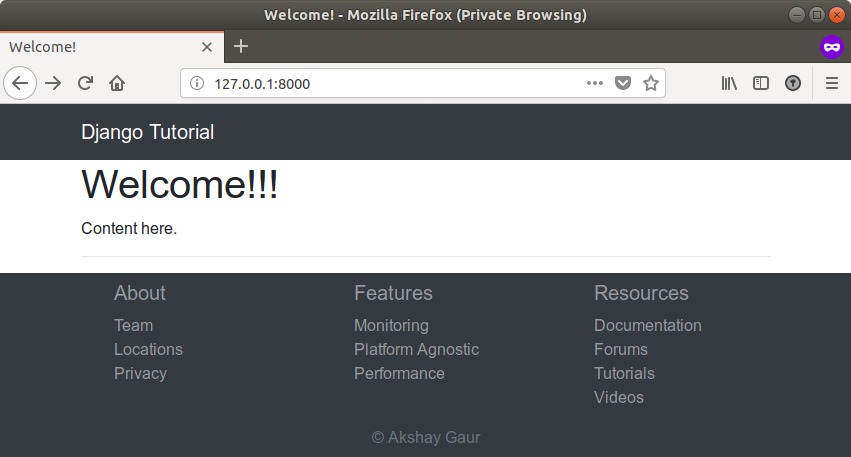

Continuing on from making a simple header, we will now create a simple footer using Bootstrap. Our Django template file "base.html" looks like this:
<!doctype html>
<html lang="en">
<head>
<meta charset="UTF-8">
<meta name="viewport" content="width=device-width, initial-scale=1, shrink-to-fit=no">
<title>{% block title %}Base HTML{% endblock title %}</title>
<link rel="stylesheet" href="https://stackpath.bootstrapcdn.com/bootstrap/4.1.1/css/bootstrap.min.css">
</head>
<body>
<nav class="navbar navbar-expand-sm navbar-dark bg-dark">
<div class="container">
<a class="navbar-brand" href="#">Django Tutorial</a>
</div>
</nav>
<div class="container">
{% block content %}
{# Your content goes here #}
{% endblock content %}
</div>
<script src="https://ajax.googleapis.com/ajax/libs/jquery/3.3.1/jquery.min.js"></script>
<script src="https://unpkg.com/popper.js/dist/umd/popper.min.js"></script>
<script src="https://stackpath.bootstrapcdn.com/bootstrap/4.1.1/js/bootstrap.min.js"></script>
</body>
</html>To add a simple footer to this page, we just need to make sure that the footer is placed after the main content of the page so that it occupies the bottom position in the page.
To do so, we can add a footer tag like so:
<!doctype html>
<html lang="en">
<head>
<meta charset="UTF-8">
<meta name="viewport" content="width=device-width, initial-scale=1, shrink-to-fit=no">
<title>{% block title %}Base HTML{% endblock title %}</title>
<link rel="stylesheet" href="https://stackpath.bootstrapcdn.com/bootstrap/4.1.1/css/bootstrap.min.css">
{# <link rel="stylesheet" href="https://stackpath.bootstrapcdn.com/bootswatch/4.1.1/materia/bootstrap.min.css">#}
<link rel="stylesheet" href="https://stackpath.bootstrapcdn.com/font-awesome/4.7.0/css/font-awesome.min.css">
</head>
<body>
<nav class="navbar navbar-expand-sm navbar-dark bg-dark">
<div class="container">
<a class="navbar-brand" href="#">Django Tutorial</a>
</div>
</nav>
<div class="container">
{% block content %}
{# Your content goes here #}
{% endblock content %}
<hr>
</div>
<footer class="py-2 bg-dark">
<div class="container">
<div class="row text-white-50">
<div class="col-md px-5">
<h5>About</h5>
<ul class="list-unstyled">
<li>Team</li>
<li>Locations</li>
<li>Privacy</li>
</ul>
</div>
<div class="col-md px-5">
<h5>Features</h5>
<ul class="list-unstyled">
<li>Monitoring</li>
<li>Platform Agnostic</li>
<li>Performance</li>
</ul>
</div>
<div class="col-md px-5">
<h5>Resources</h5>
<ul class="list-unstyled">
<li>Documentation</li>
<li>Forums</li>
<li>Tutorials</li>
<li>Videos</li>
</ul>
</div>
<div class="w-100"></div>
<div class="col-md text-muted text-center">
© Akshay Gaur
</div>
</div>
</div>
</footer>
<script src="https://ajax.googleapis.com/ajax/libs/jquery/3.3.1/jquery.min.js"></script>
<script src="https://unpkg.com/popper.js/dist/umd/popper.min.js"></script>
<script src="https://stackpath.bootstrapcdn.com/bootstrap/4.1.1/js/bootstrap.min.js"></script>
</body>
</html>And now our page looks like this:
And while we are here, let us add a Bootstrap jumbotron. Because why not?
This can be achieved by editing our "welcome.html" from our Django CBV tutorial to:
{% extends 'base.html' %}
{% block title %} Welcome! {% endblock title %}
{% block content %}
<div class="jumbotron mt-4">
<h1 class="display-4">Welcome!!!</h1>
<p>
Put your content between the header and the footer and you will be alright my friend! <br>
Jumbotron is a cool way to bring attention to the content that you want. And bootstrap just makes it so
easy!
</p>
<p class="mt-5">
<a class="btn btn-primary" href="#" role="button">Check it out</a>
</p>
</div>
{% endblock content %}
And after all that hard work, our welcome page now looks like: